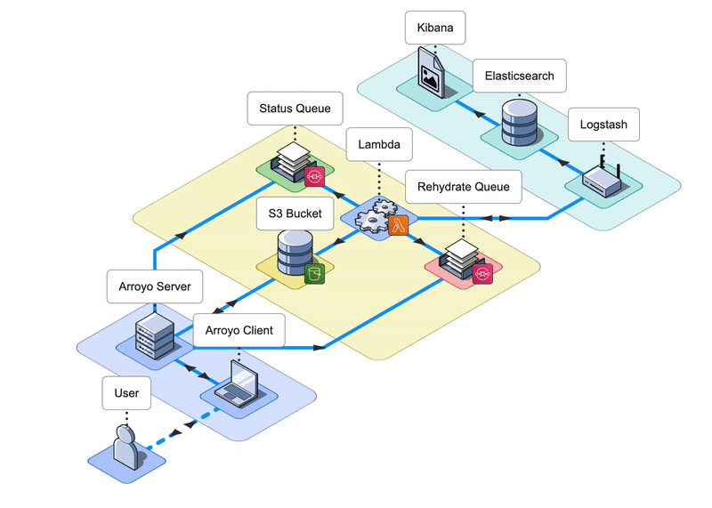

Keep Your Existing ELK Stack
Arroyo integrates with a user's existing ELK stack. Rehydrate the logs you need while keeping your existing pipeline.

Arroyo is a lightweight framework that facilitates the granular rehydration of logs, granting users the ability to select a specific timeframe to search for relevant log files.
Arroyo integrates with a user's existing ELK stack. Rehydrate the logs you need while keeping your existing pipeline.
Paid, commercial solutions exist. We would like to provide a lightweight, free alternative.
If users currently archive logs in AWS S3 and are implementing their own ELK stack -- they can quickly set up and use Arroyo.
Rehydrates logs from your S3 bucket back into users ELK stack.
Initiate log rehydration jobs within the Arroyo UI. A user can rehydrate the entire contents of their log files, or provide a query to rehydrate only relevant logs.
Arroyo ships rehydrated logs to a user's Elasticsearch via Logstash.
A user will receive notifications within the Arroyo UI once rehydration jobs have completed.
A user can return to their Kibana dashboard to view rehydration results.
Arroyo integrates with a user's existing ELK stack.
Arroyo currently supports rehydrating logs from AWS S3 back into Elasticsearch.
We are currently looking for opportunities. If you liked what you saw and want to talk more, please reach out!
Los Angeles, CA
Seattle, WA
Chicago, IL
Boston, MA